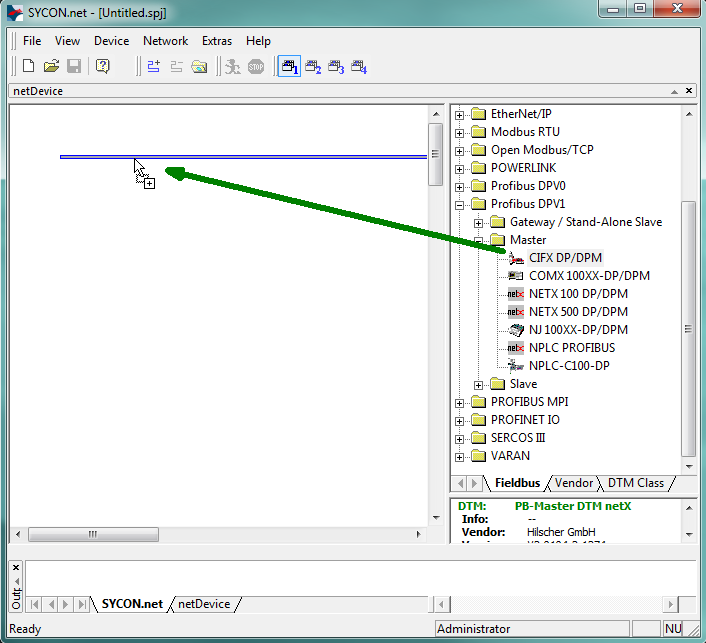
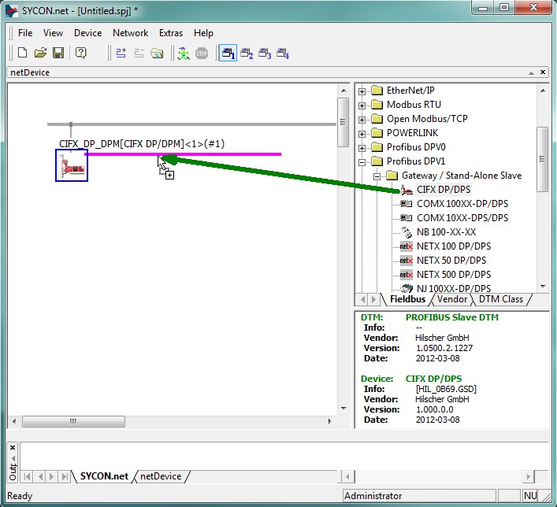
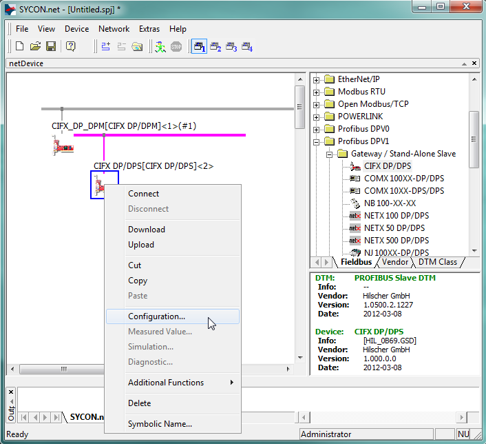
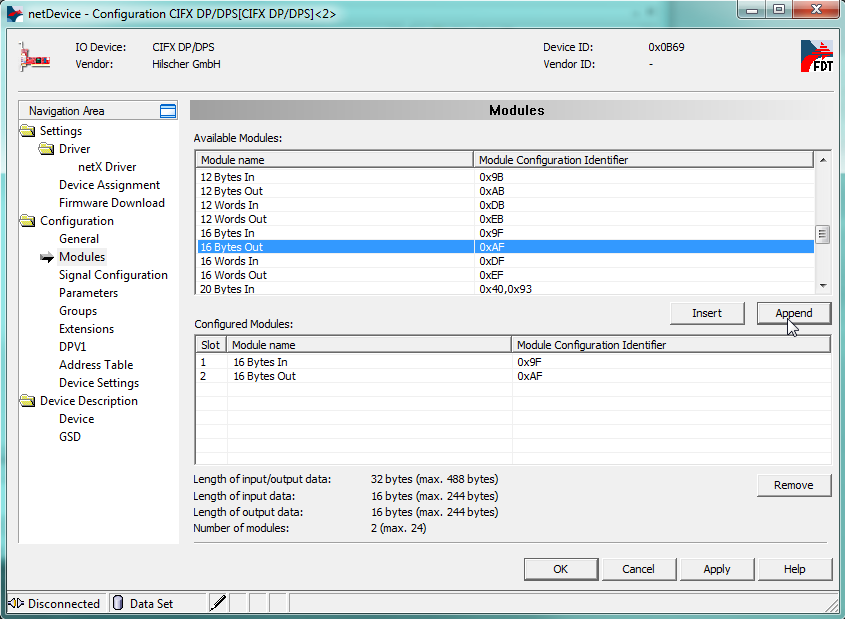
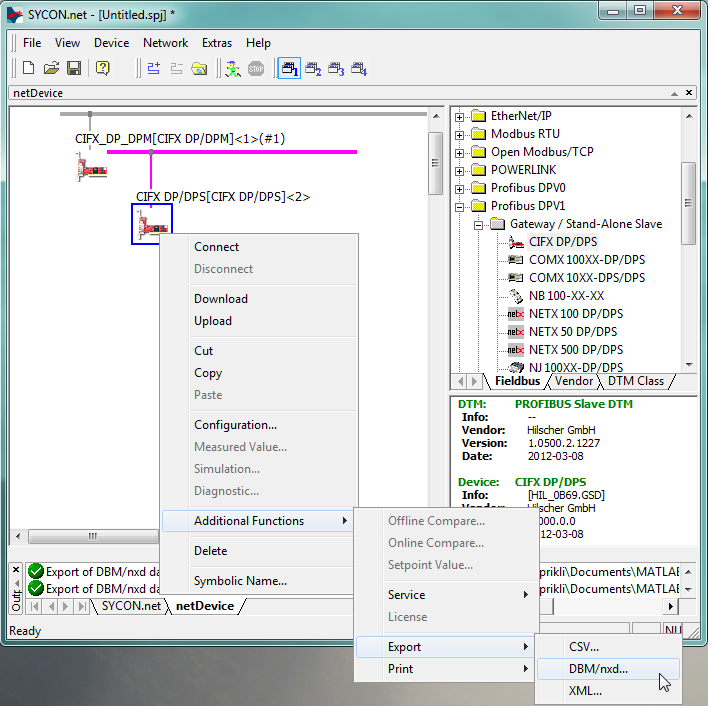

IO642 Usage Notes
IO642 Usage Notes — Usage information about the I/O module
GSD File
To set up PROFIBUS communication, you must import the device description files of PROFIBUS slaves (GSD file) into your PROFIBUS Master configuration tool or PLC programming tool (refer to Step 7). You can download the GSD file HIL_0B69.GSD of the default IO642 here.
If you use warmstart parameters to simulate a PROFIBUS slave of a different vendor, you must import the GSD file of that particular slave into your Master configuration tool. The GSD file is generally available on the vendor's website.
I/O Module configuration from Simulink
The warmstart mode allows the PROFIBUS DP Slave to be configured in Simulink using the Setup driver block.
This approach offers more options than Sycon.net and rules out having to generate and handle configuration files.
I/O Module configuration with SYCON.net
During initialization of the real-time application, the IO642 Setup block reads a configuration file from the hard drive of the target machine and configures the PROFIBUS DP protocol stack. Use the SYCON.net configuration tool to create such a file.
![[Tip]](images/tip.png) | Tip |
|---|---|
Download the SYCON.net configuration tool from the Speedgoat Customer Portal. Login to your Speedgoat account. In the Downloads section, navigate to Software and click SYCON.net (v1.400 Build 170125). |
![[Note]](images/note.png) | Note |
|---|---|
Only SYCON.net V1.400 Build 170125 has been tested. There is no guarantee therefore that other versions will work with the Speedgoat I/O Blockset. |
In addition to this short introduction, please read the SYCON.net help documentation for detailed information about how to set up a PROFIBUS DP device and export the module configuration file.
Open SYCON.net and locate the "CIFX DP/DPM" PROFIBUS DPV1 Master. Drag it to the blue line in the main panel. This creates a magenta colored PROFIBUS line.

Locate the "CIFX DP/DPS" PROFIBUS DPV1 Slave from the "Gateway / Stand-Alone-Slave" section and drag it to the PROFIBUS line in the main panel.

Open the Configuration window from the slave's context menu.

Under Configuration/Modules, define the I/O data modules to be supported by the slave by appending them to the "Configured Modules" list.

Note The Input modules are actually the outputs of the slave and vice versa. It is named from the master's point of view.
The slave address is set to "2". This can be changed in the station table of the master device's configuration.
Apply the configuration and close the windows. Right-click on the Slave icon and select Additional Functions, Export, DBM/nxd

Select a name for the file, for example: my_slave.nxd. Save the file in your current MATLAB workspace.
In MATLAB, use the following script to load the configuration and the firmware to the target machine:
IO642 = sg_IO64X_struct();% Create default structure IO642.protocol = 'IO642'; % Protocol Speedgoat ID IO642.cardid = '1'; % Module ID as defined in the model IO642.configfiles = '1'; % Number of configuration files IO642.configPath = ''; % Absolute path or '' for current dir IO642.configfile1 = 'my_slave.nxd';% Name of first configuration file sg_IO64X_loadconfig(IO642);
Configure the driver blocks according to the configuration defined in SYCON.net by specifying the corresponding amount of bytes in the "PBS Receive" and the "PBS Send" block.
When you download the model, the firmware and configuration files are loaded to the IO642 I/O module.
Front Plate Description


The IO643-32 simulates 32 PROFIBUS Slave nodes. Each node has two LEDs that indicate the communication status.

LED Status Description
LED Color State Meaning SYS Green On Operating system running Green/Yellow Blinking Second stage bootloader is waiting for firmware Yellow On Bootloader netX (= romloader) is waiting for second stage bootloader Off Off Power supply for the device is missing or hardware defect COM Green On RUN, cyclic communication Green Flashing, cyclic (2 Hz) Master is in CLEAR state Red Flashing, acyclic (1 Hz) Device is not configured Red Flashing, cyclic (2 Hz) STOP, no communication, connection error Red On Wrong configuration at PROFIBUS DP Slave Off Off Device is not switched on or power is missing. During firmware download process
LED Color State Meaning STATUS/COM1 Green On RUN, cyclic communication Green Flashing, cyclic (2 Hz) Master is in CLEAR state Off Off LED ERROR is off: Device is not switched on or network power is missing
LED ERROR is flashing or “on”: Refer to description LED ERROR
ERROR/COM2 Off Off Refer to description for LED STATUS Red Flashing, acyclic (1 Hz)
Device is not configured Red Flashing, cyclic (2 Hz) STOP, no communication, connection error Red On Wrong configuration at PROFIBUS DP Slave
Status Codes
For the list of status codes, please refer to Status Codes for Protocols Supported with the IO64x/IO75x Modules.